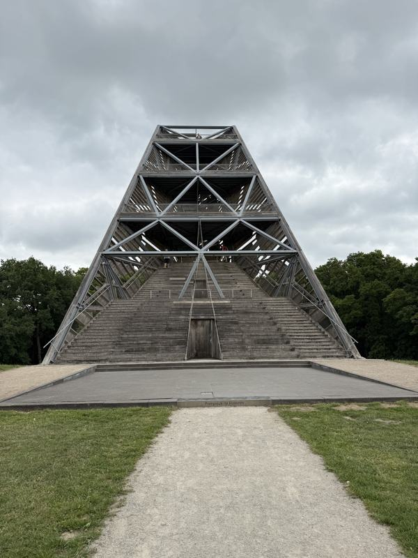
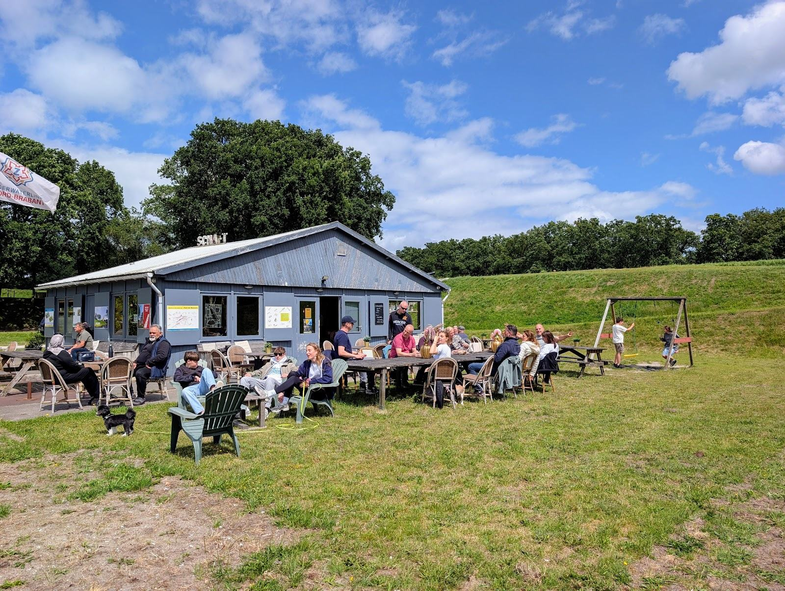
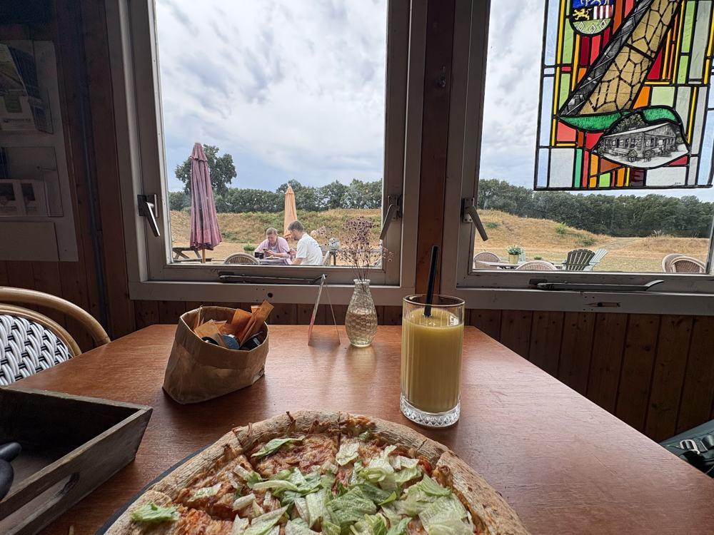
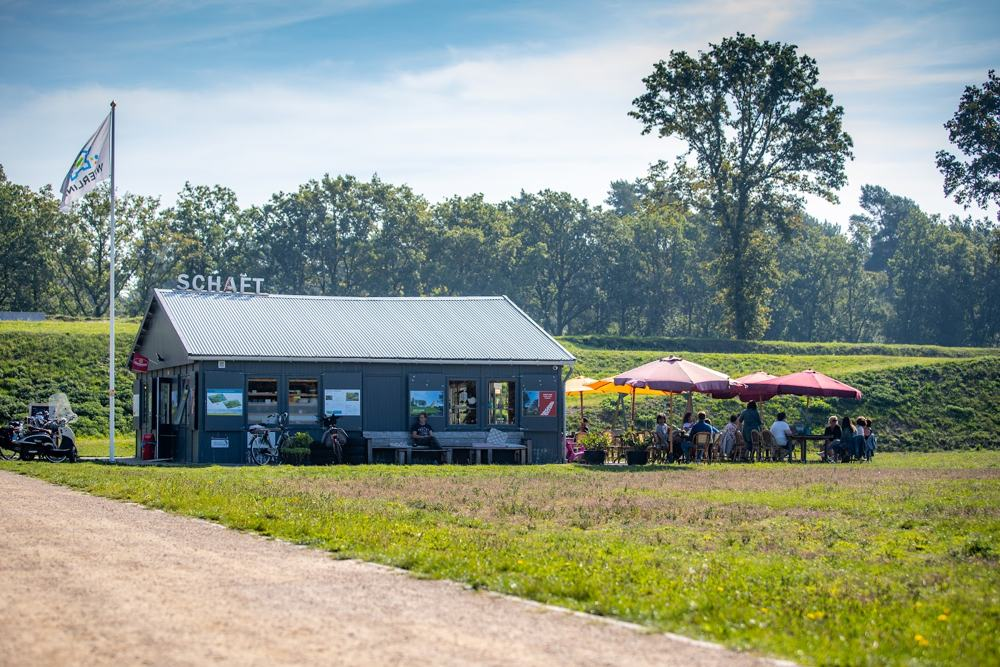
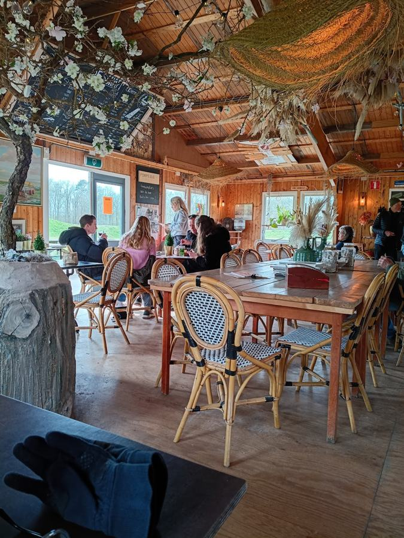
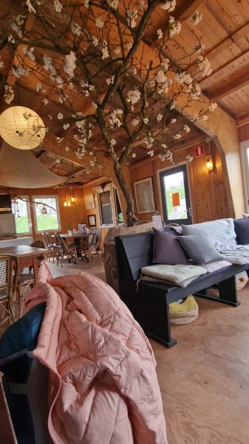
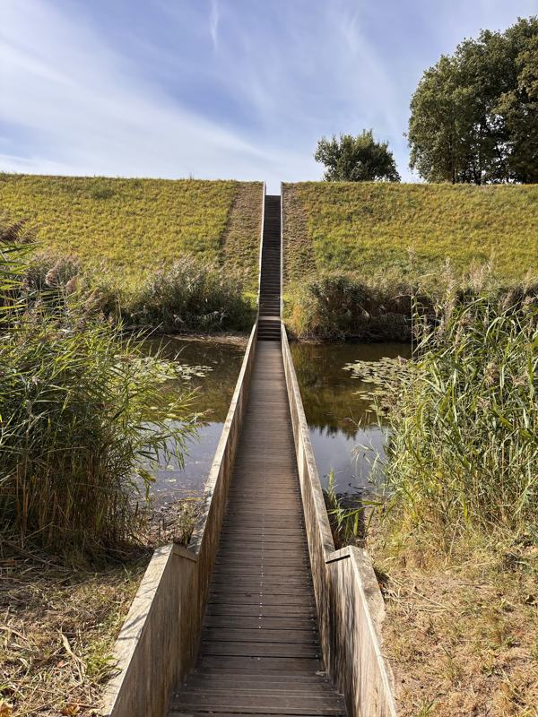
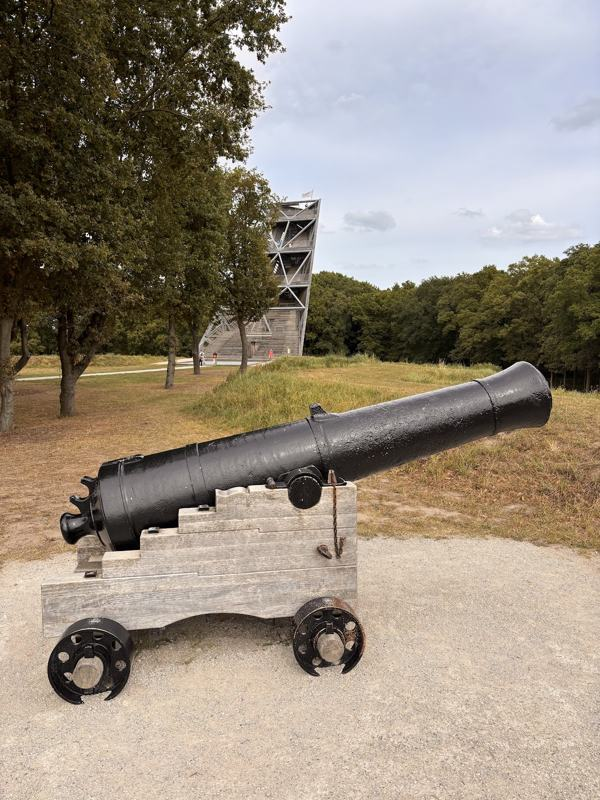
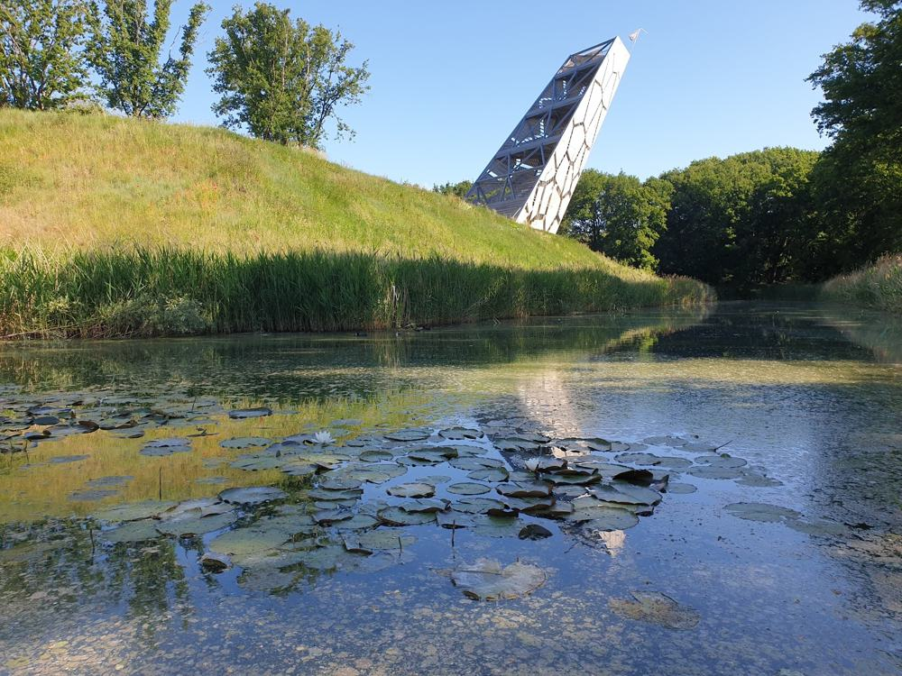
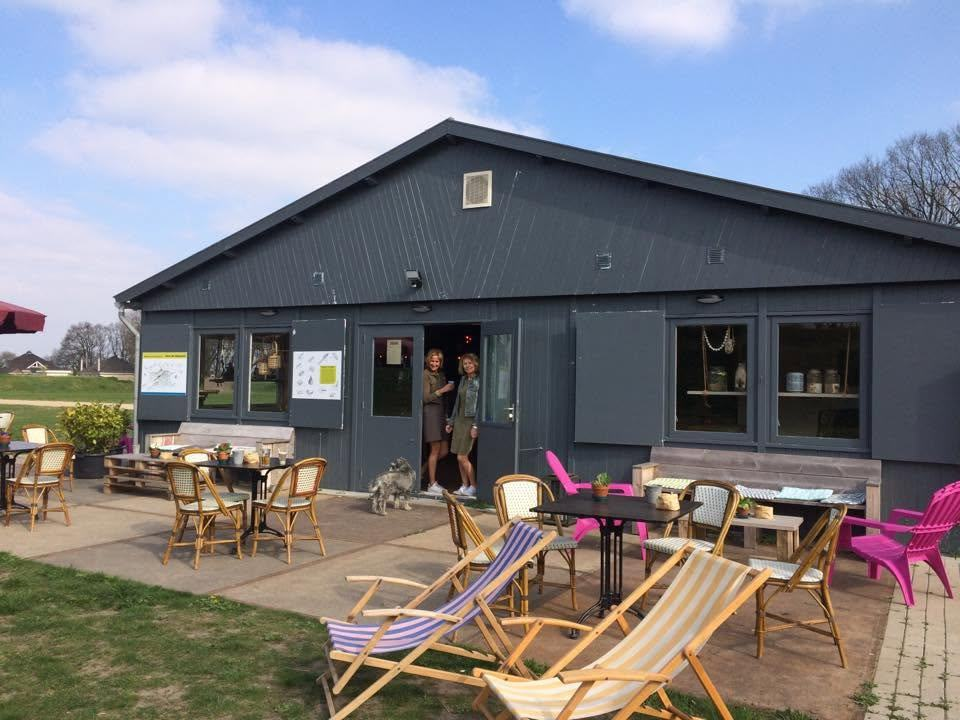

Pompejustoren
De uitkijktoren op het fort. Bij ons vind je informatie over de toren.

Even zitten na het wandelen of fietsen. Op het terras of binnen, met zicht op de Pompejustoren en de Mozesbrug.
Geen uitgebreide kaart, wel alles voor een goede pauze tijdens je wandeling over het fort.

Laat het ons even weten, dan houden we rekening met jullie. Koffie met appeltaart of erwtensoep met worstenbrood voor de hele groep.
Bij mooi weer zit je buiten op het gras van het fort. Is het koud of regent het, dan zit je binnen warm.



De Schaft is ook het informatiepunt van Fort de Roovere. Vraag gerust waar je naartoe kunt.

De uitkijktoren op het fort. Bij ons vind je informatie over de toren.

De brug dwars door de vestinggracht. Je ziet hem vanaf ons terras.

Loop over de wallen langs de kanonnen, met de toren in de verte.

Het fort ligt aan etappe 1 van het Zuiderwaterlinie Wandelpad, van Bergen op Zoom naar Steenbergen.

De Schaft is het informatiecentrum en de horeca op Fort de Roovere. Wandelaars, fietsers en gezinnen komen hier voor een kop koffie, iets kleins te eten en informatie over het fort en de Pompejustoren.
Je vindt ons aan de Ligneweg, midden op het fort. Vanaf het terras kijk je zo het groen in.
Even pauze tijdens je wandeling? Loop gewoon binnen. Met een groep? Stuur ons dan even een berichtje.
Open vanaf 10:00 uur. Twijfel je of we open zijn? Bel of app ons even.